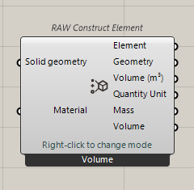
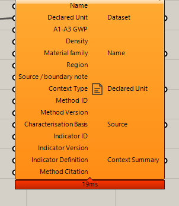
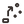
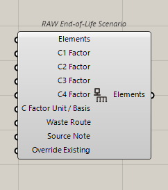
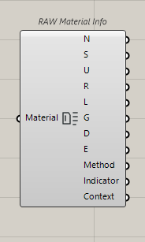
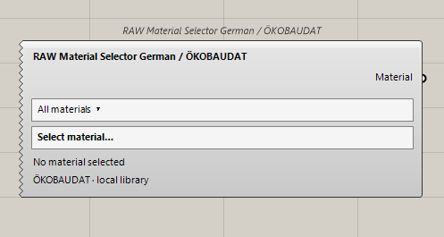
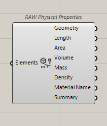
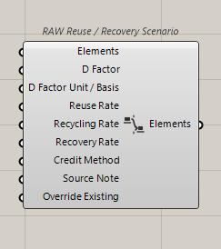
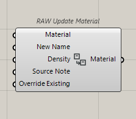

Impact
RAW Assign Process Impact
Allocates evaluated events into element ledgers with duplicate, overlap, boundary and context checks.
Current RawPalette groups: Materials, Elements, Impact, Visualisation. Advanced network and legacy components remain loadable but are hidden from ordinary palette discovery.
Compact recipe interfaces are documented here. Exhaustive mode-specific type tables and fresh screenshots remain under review.
Impact
Allocates evaluated events into element ledgers with duplicate, overlap, boundary and context checks.

Elements
Combines geometry and material with optional dimensional data into an analytical element and known quantities.
Impact
Constructs and evaluates one stable fabrication event from entered parameters and one authoritative energy route.
Materials
Editor holds positive declared output/unit, state and boundary. Output is not the inferred ingredient sum. Connect upstream Material to Ingredients.Materials for nesting;
Elements
Constructs geometric section data in SI from document-unit dimensions or a profile.

Materials
Creates a self-declared material and its explicit context.
Impact
Calculates GWP for the selected scope using quantities, material factors and eligible enrichment.

Materials
Editor preserves substance identity and compartment. Physical emissions are separate from kg CO₂-eq supplied impacts. Missing direct-emission data is not confirmed zero.

Impact
Assigns evidenced C1–C4 factors to elements, protecting source values by default.
Visualisation
Maps existing GWP values to geometry colours, with explicit supported normalisation and unavailable handling.
Visualisation
Creates reference swatches, labels and placement points from preview output.
Materials
Editor rows retain identities and source bindings. Add connected material explicitly binds a row. Wired quantities override stored values. A disconnected source never bec

Materials
Inspects original, custom or derived material metadata.
Materials
Selects one pinned Danish BR18/Table 7 material with unchanged units and metadata.

Materials
Selects one pinned German/ÖKOBAUDAT material from the current library.

Elements
Reads constructed elements and exposes available physical quantities and their provenance.
Impact
Reads and separates material/process contributions from an existing result.

Impact
Assigns an evidenced net D factor with provenance and rate metadata beyond the current system boundary.

Materials
Creates a user-derived material overlay with name/density evidence; source stays unchanged.
Elements
Constructs measured wall elements and material-part previews. Seven modes: Solid Layer, Layered, Cavity, Framed, Rainscreen, Sandwich Panel, Curtain Wall.